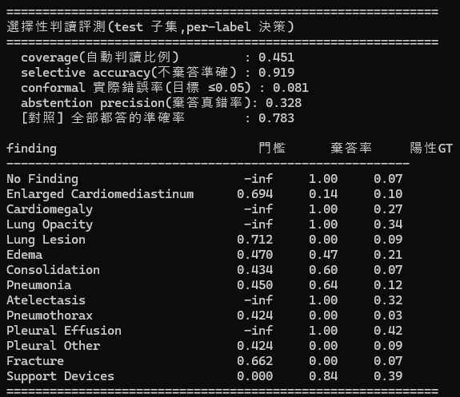
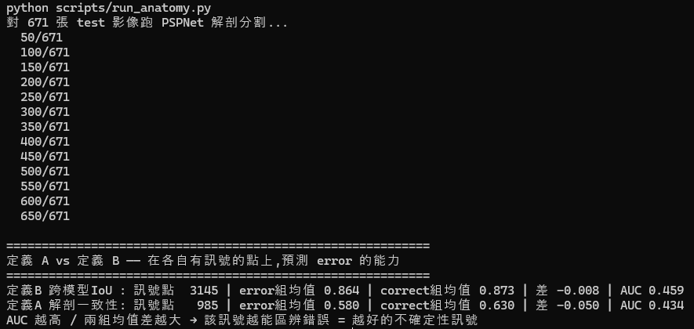
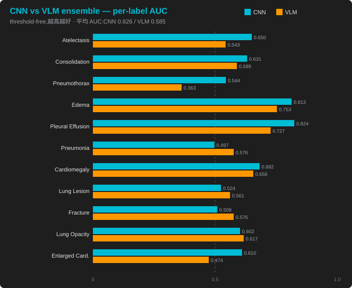
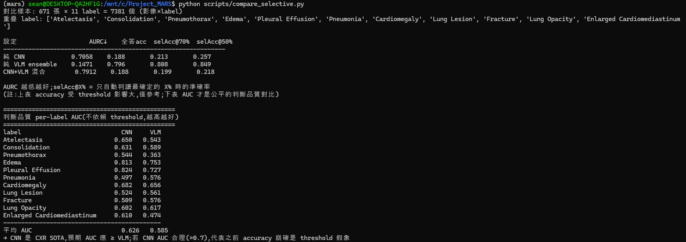
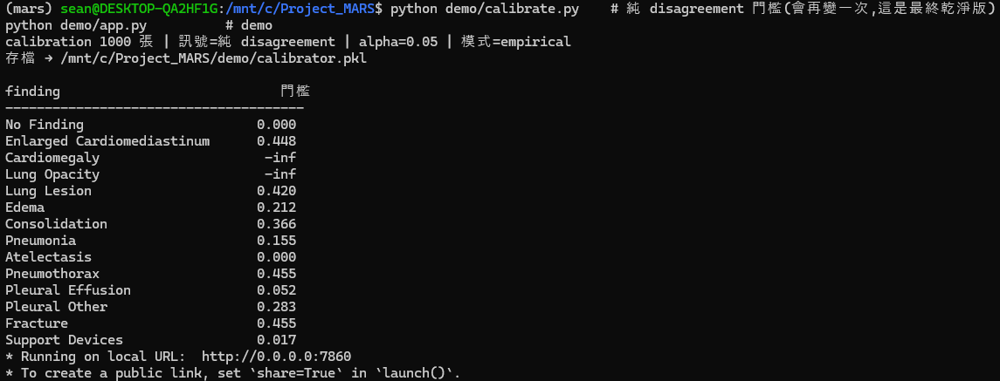

Selective Chest X-ray Interpretation with Multi-Source Uncertainty & Conformal Guarantees
一個「會說我不確定」的 AI 判讀系統 —— 有把握就自動判讀,沒把握就誠實標記、交給人類專家。 以胸腔 X 光(CXR)驗證,但框架領域無關:同一套邏輯可用於缺陷檢測、金融風控等任何 「錯誤成本高 + 需要可證明信任」的場景。
這個專案不拼判讀準確率,而是拼 可信賴的自動化 —— 讓 AI 知道自己何時不可靠,把不確定的交給人。三個核心:
像一個好的實習醫師:大部分片子能獨立判讀,但知道自己什麼時候該去問主治醫師。現在的醫療 AI 最危險的不是「看錯」,而是「看錯了還很自信」—— 對每張片子都給斬釘截鐵的答案。SelectiveCXR 要做的是有「自知之明」的 AI。
三個「出身不同」的 VLM(視覺語言模型)各自判讀同一張片子,用它們之間的判斷分歧當不確定性訊號,經 conformal 校準後做三檔分流。
胸腔 X 光
│
┌────────────┼────────────┐
▼ ▼ ▼
Qwen3-VL MedGemma Llama-3.2-V ← 三個跨 backbone 的 VLM
(通用) (醫療) (通用) 錯誤不相關,分歧才有意義
└────────────┼────────────┘
▼
跨模型 disagreement(判斷分歧) ← 不確定性訊號
▼
Conformal Prediction 校準 ← distribution-free 統計保證
▼
三檔分流決策
┌────────────┼────────────┐
▼ ▼ ▼
高度自動 部分標記 整案轉人工
| 類別 | 技術堆疊 |
|---|---|
| 模型(自架) | Qwen3-VL-8B、MedGemma-1.5-4b、Llama-3.2-11B-Vision(4-bit 量化,三模型共 ~17 GB / 24 GB) |
| 推論引擎 | vLLM(continuous batching,~28× 提速)+ transformers(混合引擎,跑 vLLM 當時不支援的 Llama-3.2-Vision) |
| 不確定性與決策 | 跨模型 disagreement、Conformal Prediction(Mondrian / per-label)、三檔分流 |
| 對比實驗 | TorchXRayVision DenseNet(CNN baseline)、per-label AUC(不依賴 threshold) |
| 前端 | Gradio(白話化 demo,病徵中文、合併視覺化) |
| 資料 | MIMIC-CXR(CheXpert 14-label);demo 展示用公開 NIH ChestX-ray14 |
| 硬體 / 環境 | 單張 RTX 4090(WSL2)、Python |
開發過程不是「一路成功」,而是一連串「遇到問題 → 驗證 → 誠實修正」。以下是幾個關鍵節點:
解決方式:用三個跨 backbone 模型的判斷分歧(disagreement)當不確定性訊號。驗證確認有效 —— 棄答最不確定的樣本後,自動判讀部分的準確率達 0.919,遠高於全答的 0.783;且 conformal 實際錯誤率 0.081,符合「≤ α」的保證。

選擇性判讀評測:selective accuracy 0.919 vs 全答 0.783,conformal 實際錯誤率 0.081。
解決方式:用 AUC 嚴格驗證,發現跨模型 bbox IoU(定義 B,AUC 0.459)與解剖模型驗證(定義 A,AUC 0.434)都 < 0.5,沒有區辨力。根因是 VLM「判斷」可靠但「定位」能力本質不足 —— 誠實移除,不硬塞無效訊號。

grounding 兩種定義的預測 AUC 均 < 0.5,確認無效後移除。
解決方式:候選模型反覆卡在推論框架(vLLM)的版本相容性,而非模型本身。意識到「約束是 vLLM 而非模型」後,改用 transformers 跑 Llama-3.2-Vision,回到理想的跨 backbone 設計(混合引擎,對前端無影響)。
解決方式:用 per-label AUC(不依賴 threshold)做公平對比 —— CNN 0.626 略勝 VLM ensemble 0.585,誠實承認、不誇大;但兩者逐病徵互有勝負、錯誤不相關,反而成為「CNN + VLM 混合」的理論基礎。

每個病徵的 per-label AUC:CNN(青) vs VLM(橘)。CNN 平均略高(0.626 vs 0.585),但逐病徵互有勝負 —— Pneumonia、Lung Lesion、Fracture、Lung Opacity 等 VLM 反而較佳,代表兩者錯誤不相關。

原始終端機輸出,佐證上圖數據。
解決方式:診斷發現是多標籤聯合棄答的結構性挑戰(label 越多,「整張零棄答」越難發生)。改採 α=0.15 操作點 + 雙分界三檔,讓「高度自動 / 部分標記 / 整案轉人工」都能呈現;同時誠實標出 2 個 disagreement 救不回的能力邊界病徵(門檻 −inf,固定交人工)。

per-label conformal 門檻:Cardiomegaly、Lung Opacity 為 −inf(能力邊界,固定交人工)。